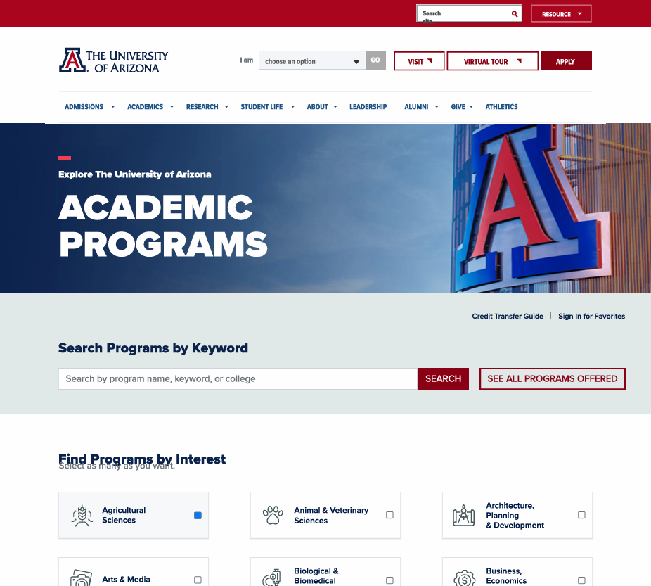
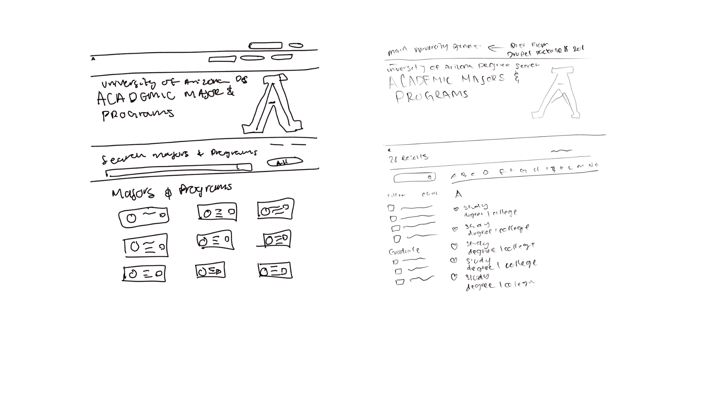
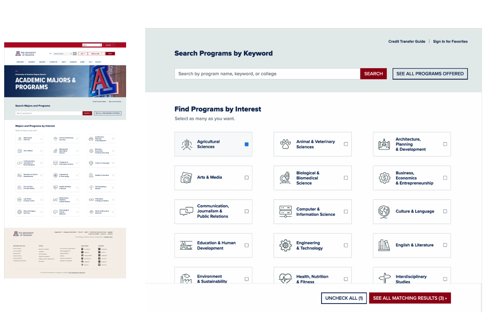
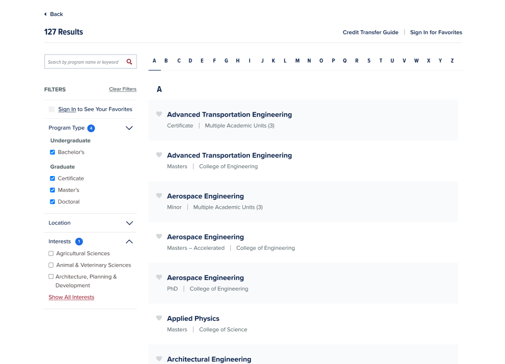
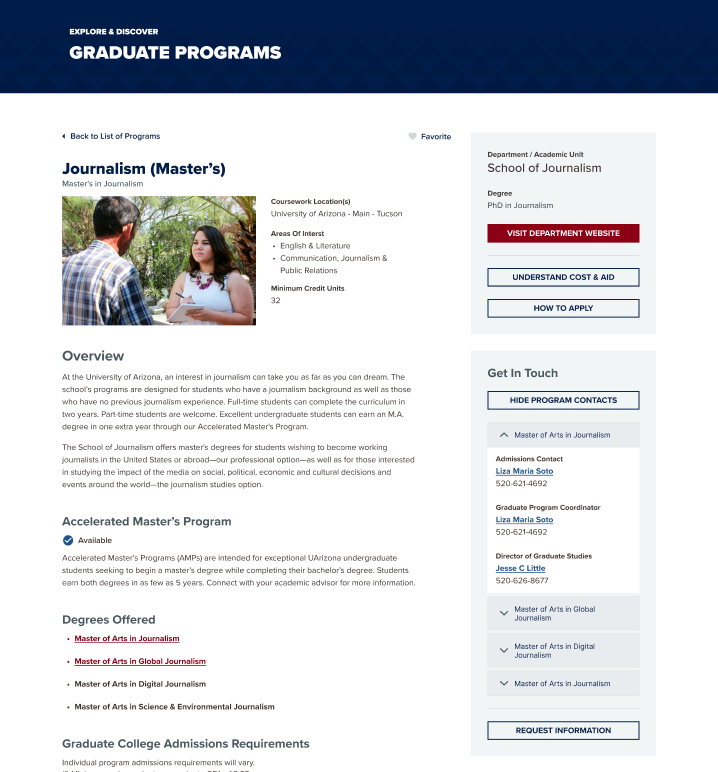

The Degree Search application was in need of some love, so I gave it a cosmetic facelift. This case study shows that visual desing alone can have a huge impact on the UX of a web application.

UX/UI Designer
The University of Arizona's graduate degree search needed a complete redesign to better serve prospective students. The existing system was outdated, difficult to navigate, and didn't effectively showcase the breadth of graduate programs available.
The goal was to create an intuitive, accessible, and engaging experience that helps students discover the right graduate program for their career aspirations.
Through user interviews with prospective graduate students and analysis of existing search behavior, several key insights emerged:
Students don't know what they're looking for. Many prospective graduate students are exploring options and need guidance through the discovery process rather than just a search tool.
Decision factors vary widely. Some prioritize research opportunities, others focus on career outcomes, location, or specific faculty. The design needed to accommodate multiple decision-making paths.
Mobile is critical. Over 60% of initial research happens on mobile devices, but the application process shifts to desktop. The experience needed to work seamlessly across devices.


The redesigned homepage prioritizes exploration and discovery with multiple entry points. Featured programs, category browsing, and an intelligent search work together to guide users toward their ideal program.
Advanced filtering by degree type, college, format (online/on-campus), and area of study. Search includes autocomplete with program suggestions and popular searches.
Redesigned program cards surface key decision-making information at a glance: degree type, format, application deadline, and quick program highlights.
Users can select multiple programs to compare side-by-side, viewing curriculum, career outcomes, faculty expertise, and admission requirements.
Based on browsing behavior and stated interests, the system suggests related programs users might not have considered.

The filtering interface allows users to quickly narrow down 300+ programs using multiple criteria. Active filters are clearly displayed with the ability to quickly remove or adjust them.

Program pages provide comprehensive information organized into scannable sections. Key actions like "Request Information" and "Apply Now" remain accessible throughout the scroll experience.
The new search functionality combines keyword search with intelligent filtering. As users type, the system suggests programs, popular searches, and related keywords. The search learns from user behavior to improve results over time.
Recognizing that many users don't arrive with a specific program in mind, we created curated pathways organized by career interests, research areas, and academic disciplines.
This discovery-first approach helps students explore options they might not have known existed, increasing engagement with a wider range of programs.
The mobile experience was redesigned from the ground up with touch-first interactions, simplified filtering, and progressive disclosure of information.
Users can easily save programs to compare later on desktop, creating a seamless cross-device research experience.
To ensure consistency across 300+ program pages and enable efficient content management, I developed a comprehensive component library including:
Flexible card components that work in grids, lists, or featured layouts. Includes hover states, loading states, and "saved" indicators.
Reusable filter chips, dropdowns, and range selectors that maintain state across the user journey.
Standardized layouts for program pages, faculty profiles, and research areas that maintain brand consistency while allowing content flexibility.
Contextual CTAs that adapt based on the user's stage in the decision journey, from information requests to application.
Post-launch user testing revealed that students felt more confident in their program choices and appreciated the ability to explore options they hadn't initially considered.
Admissions staff reported receiving more qualified inquiries from students who had thoroughly researched their options using the new system.
Discovery needs differ from search needs. Building separate pathways for users who know what they want versus users who are exploring led to better outcomes for both groups.
Progressive disclosure is critical at scale. With hundreds of programs, showing all information at once overwhelms users. Revealing information progressively based on user interest keeps the experience manageable.
Mobile and desktop serve different purposes. Rather than forcing identical experiences, we optimized each platform for its primary use case: mobile for discovery and research, desktop for detailed comparison and application.
Based on initial success, we're expanding the system to include personalized dashboards for applicants, integration with virtual tour experiences, and AI-powered program matching to further streamline the graduate school discovery process.